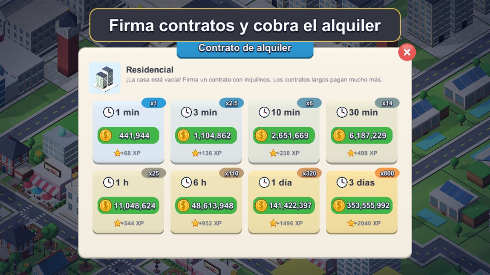

¿Extrañas los city builders clásicos? Conoce Money City
Hacia 2010, millones de personas jugaban a city builders sociales de Facebook como Millionaire City, CityVille y SimCity Social. Construías un pueblo, cobrabas monedas de tus casas, ampliabas tu terreno y decorabas cada rincón. Muchos de esos juegos ya no están disponibles, pero es fácil recordar lo que hacían sentir. Money City es un juego nuevo y original, pensado para quienes extrañan ese estilo de juego.
Construir de forma sencilla, la satisfacción de cobrar dinero cada vez y una ciudad que crecía poco a poco, de unas pocas casas a un horizonte de rascacielos. Podías jugar dos minutos o toda una tarde, y siempre había algo por lo que volver.
Cómo lo recupera Money City
Money City es un juego acogedor de construcción de ciudades y magnate para Android. Construyes casas, firmas contratos de alquiler de 1 minuto a 3 días, cobras el alquiler con un toque y conviertes una pequeña aldea en una megaciudad. Compras terrenos nuevos en una isla con cinco regiones, mejoras edificios hasta 5 estrellas, decoras con parques y estatuas y construyes 10 maravillas del mundo que aumentan tus ingresos.
Qué es diferente hoy
Money City es para un solo jugador y funciona sin conexión. No necesitas una cuenta de Facebook, amigos a quienes enviar solicitudes ni conexión a internet. Los anuncios son opcionales: solo ves uno cuando quieres un bonus. El juego está disponible en 12 idiomas y se abre en el idioma de tu teléfono.

Firma contratos y cobra el alquilerConstruye 10 maravillas del mundoExpándete por 5 regiones únicas
Preguntas frecuentes
¿Money City tiene relación con Millionaire City, CityVille o SimCity Social?
No. Money City es un juego original creado por un desarrollador independiente. No está afiliado, respaldado ni vinculado a esos juegos ni a sus propietarios.
¿Money City se parece a los city builders clásicos de Facebook?
Comparte la misma idea relajante de construir una ciudad y cobrar el alquiler de tus edificios, con funciones móviles modernas como juego sin conexión, contratos de alquiler, cinco regiones y maravillas del mundo.
¿Necesito Facebook o amigos para jugar a Money City?
No. Money City es un juego para un solo jugador. Puedes jugar solo y sin conexión.
¿Dónde puedo jugar a Money City?
Money City está disponible para Android en Google Play.
Millionaire City, CityVille y SimCity Social son marcas comerciales de sus respectivos propietarios. Se mencionan únicamente para describir un estilo de juego. Money City no está afiliado a estos juegos ni a sus propietarios, ni cuenta con su respaldo.